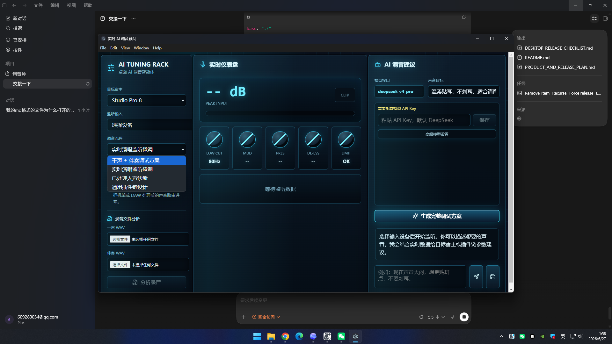

Analyze Singing Takes
Use dry vocal plus backing track files, or monitor a live DAW playback path when exporting is inconvenient.
A desktop AI tuning agent that listens to dry vocals and backing tracks, then returns a professional plugin-chain plan with parameter suggestions for common DAW workflows.

Use dry vocal plus backing track files, or monitor a live DAW playback path when exporting is inconvenient.
Generate vocal tuning plans with cleanup, pitch, EQ, compression, de-essing, space, automation, and final check stages.
Connect DeepSeek or another OpenAI-compatible API through base URL, model name, and API key settings.
SHA256:
FAE89047ACBCFE05EA30B16B110FBE2E69A118630A5C4494A45C8595D8C86A2D